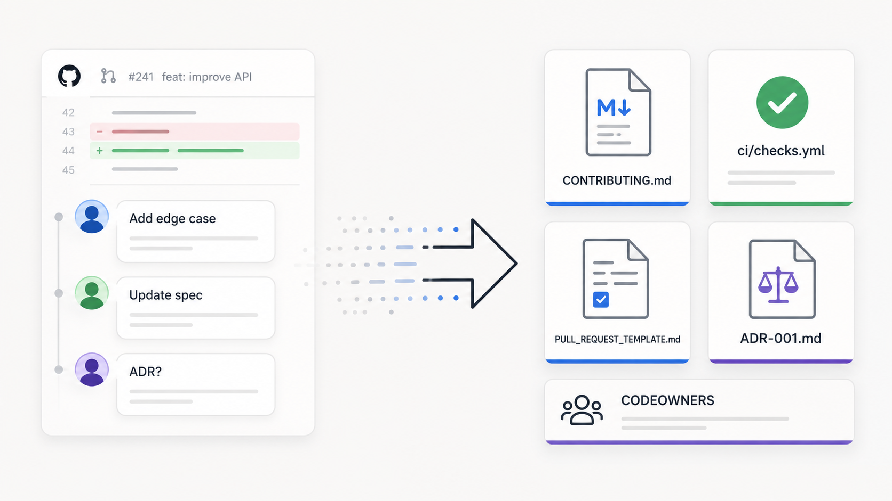
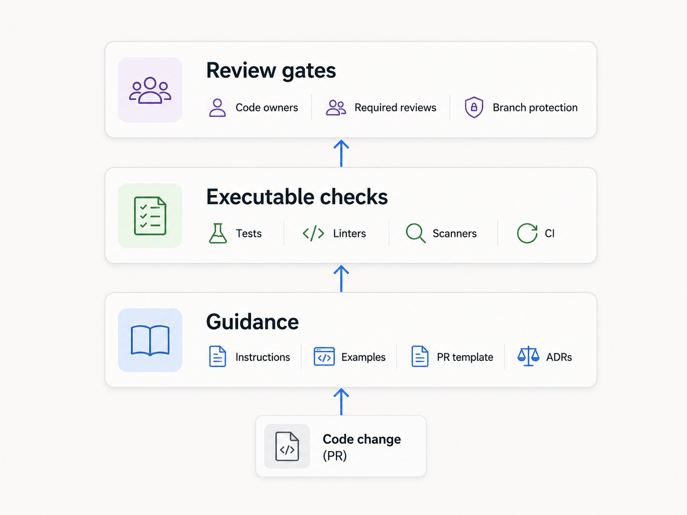

The first sign was not a production incident. It was the code review queue.
A team had started using AI coding assistants across a few services. At first, the changes looked faster. Developers generated scaffolding quickly. Tests appeared sooner. Refactors that used to feel tedious became easier to start.
Then reviewers noticed a pattern.
The pull requests were not obviously broken, but they kept missing local expectations. Tests covered the happy path but skipped the edge cases the team cared about. Error handling did not follow the service convention. A change crossed a module boundary that senior engineers usually guarded. Database migrations had no rollback notes. API changes forgot to update the OpenAPI spec. PR descriptions explained what changed, but not why.
Senior engineers kept writing the same review comments:
“Please add the failure case.”
“Use the domain service instead of calling the repository directly.”
“Document the migration risk.”
“This needs an ADR update.”
“Follow the existing error handling convention.”
It would be easy to blame the AI assistant. Sometimes the assistant did miss context. Sometimes it produced code that looked plausible but did not fit the system.
But the assistant was not the whole problem.
New human contributors missed the same expectations too. The team’s standards were real, but they lived in scattered places: old pull requests, Slack threads, onboarding calls, stale wiki pages, and the memory of a few senior engineers.
AI-assisted development made the gap more visible.
That is where I find “process as code” useful as a framing. It is not a new methodology or a tooling category. It is a practical way to move repeatable engineering expectations into versioned, reviewable, and sometimes executable artifacts that live close to the code.
The goal is simple: make the standards visible where the work happens.
AI assistants expose standards you never wrote down
AI coding assistants do not remove the need for engineering standards. They put more pressure on teams to make those standards explicit.
A human developer can learn team conventions over time. They hear comments in planning. They pair with senior engineers. They remember why a shortcut caused problems last year. Even then, knowledge spreads unevenly.
An AI assistant works from the context available to it: the prompt, the surrounding code, the repository, configured instructions, tool behavior, and whatever files it can read. Some tools can use repository-level instruction files. GitHub documents ways to customize Copilot with repository-wide and path-specific instructions in custom instructions. OpenAI has described how Codex can use instruction files such as AGENTS.md as part of the agent workflow in Unrolling the Codex agent loop. Claude Code documents project memory through files such as CLAUDE.md, while also treating this kind of memory as guidance rather than guaranteed behavior in its memory documentation.
That distinction matters.
Repository instructions can guide assistants. They do not enforce correctness.
DORA’s work on AI-assisted software development is useful here because it frames AI adoption as part of a broader software delivery system, not as an isolated tool decision. In practical terms, AI tools operate inside the engineering system a team already has. Clear standards, fast feedback, and disciplined review give both humans and assistants better working conditions. If the system depends mostly on tacit knowledge, AI-assisted work tends to expose that weakness faster.
This is not an anti-AI argument. It is an engineering systems argument.
If a team has never written down what “good tests” mean for a service, an assistant may generate tests that look fine but miss the important cases. If architecture boundaries exist only in senior engineers’ heads, an assistant may follow a dependency path that compiles but violates the intended design. If rollback expectations are discussed only during review, migrations will keep arriving without rollback notes.
The assistant is often revealing an old process gap.
The real problem is scattered standards
Most teams have standards. Fewer teams have a durable source of truth for them.
A team may expect controllers to avoid direct repository access, API changes to update contract files, migrations to include rollback notes, and security-sensitive changes to involve the platform team. These are useful expectations. The problem is where they live.
Some live in senior engineers’ memory. Some live in a wiki page that nobody trusts. Some are buried in old pull request comments. Some exist only as “we usually do it this way.” Some are visible in the code, but the codebase contains both old and new patterns, so inference becomes unreliable.
AI assistants can infer patterns from nearby code, and humans can do the same. But inference is not the same as an agreed standard.
If the standard matters, it should be visible.
Repository-level artifacts help because they put local expectations near the work. Documentation that is tightly coupled to a codebase is easier to maintain when it is owned, reviewed, and updated as part of normal engineering work. The documentation chapter in Software Engineering at Google makes a similar point: docs work better when they have ownership, review, and a canonical place in the workflow.
Architecture decisions have the same issue. Thoughtworks describes Lightweight Architecture Decision Records as a way to capture important decisions, context, and consequences, ideally close to the source of change. ADRs do not enforce architecture by themselves, but they preserve the “why” behind boundaries and trade-offs.
A repository should not contain every company policy. Cross-team strategy, compliance policy, incident process, and people-related guidance may belong elsewhere. But standards that affect how code is changed, tested, reviewed, deployed, or understood often deserve to live near the code.
A three-layer model for process as code
Process as code is easiest to reason about in three layers:

- Guidance
- Executable checks
- Review gates
Each layer does a different job. Problems start when teams confuse them.
Layer 1: Guidance
Guidance explains expectations.
This is where files such as CONTRIBUTING.md, AGENTS.md, .github/copilot-instructions.md, CLAUDE.md, README files, coding conventions, review rubrics, and examples can help.
Good guidance answers practical questions:
- How do I build and test this project locally?
- Which test commands should I run before opening a PR?
- What error handling pattern should this service use?
- Which files are generated and should not be edited directly?
- What architecture boundaries should contributors avoid crossing?
- What does a good PR description include?
- When should an ADR be added or updated?
The important word is “guidance.”
Natural-language files help humans and assistants understand the local way of working. They are useful for context, examples, conventions, and workflow expectations. They are not enforcement.
This is why vague instruction files disappoint teams.
“Write good tests” is weak.
“Service changes should include tests for validation failures, permission failures, and downstream timeout behavior. See tests/orders/error-handling.spec.ts for examples” is better.
“Follow our architecture” is weak.
“Handlers in api/ should call application services in app/. They should not import repositories from infra/ directly” is better.
Specific guidance helps humans. It also gives AI assistants a better starting point when the tool supports repository instructions.
Layer 2: Executable checks
Executable checks handle repeatable rules.
This includes tests, linters, formatters, type checks, build checks, dependency scans, secret scans, generated-code drift checks, schema validation, architecture boundary checks, and CI pipelines.
This layer is where process becomes more than a reminder.
DORA describes continuous integration as frequent integration supported by automated builds and tests that provide fast feedback. That is a core example of this idea. The team is not just saying, “Please make sure the build works.” The repository contains the commands, checks, and pipeline that verify repeatable expectations before changes are merged.
Suppose the team requires API schema updates when controllers change. A PR template can ask, “Did you update the OpenAPI spec?” That is useful. But if schema drift can be detected automatically, a CI check is stronger.
Or suppose the team wants to protect module boundaries. A written rule helps. A static analysis check or architecture test that fails when api/ imports infra/ directly is better.
This does not mean everything should become a gate. Some checks are expensive. Some are flaky. Some rules are too context-dependent. But when a rule is mandatory, repeatable, and cheap enough to check, automation is usually better than repeated review comments.
Layer 3: Review gates
Some parts of the process need human accountability.
Repository platforms can enforce pieces of this workflow. For example, GitHub protected branches can require pull request reviews, status checks, code owner approval, conversation resolution, and other merge conditions before changes reach protected branches.
The principle is not GitHub-specific: sensitive changes should be routed through the right checks and the right people.
Review gates are useful for areas such as authentication, authorization, billing, customer data handling, production infrastructure, database migrations, public API contracts, and core architecture boundaries.
A CODEOWNERS rule or required review does not guarantee quality. It makes ownership visible and harder to bypass accidentally.
This matters with AI-assisted work because AI-generated code can contain flaws or miss local risk context, just as human-written code can. It should go through the same review, scanning, and validation path as any other change.
NIST’s Generative AI Profile emphasizes governance, documentation, human review, oversight, and risk management for generative AI systems. In software delivery, that does not have to mean heavyweight bureaucracy. It can mean clear ownership, traceable decisions, and risk-appropriate review.
Guidance and enforcement are different
A common mistake is to put every standard into a document and stop there.
That improves visibility, but it does not create consistency by itself.
Take this instruction:
Always add tests for edge cases.
It is better than saying nothing. But it still leaves questions open. Which edge cases? Where are examples? Which test style should be used? What should block a merge?
A stronger setup might include test examples for common failure modes, test helpers that make the right thing easy, a PR template prompt asking which cases were tested, CI running the test suite, and a review rubric for risk-heavy changes.
The instruction explains intent. The tests and CI provide executable feedback. The reviewer checks whether the change is meaningful and whether the chosen cases match the risk.
This separation is important.
Natural-language guidance is good for context. Executable checks are better for repeatable rules. Human review is still needed for judgment.
A test can verify that a migration rollback file exists. It cannot decide whether the migration is safe to run on Friday afternoon.
A linter can enforce an import boundary. It cannot decide whether the boundary itself should change.
A PR template can ask for customer impact. It cannot know whether the team understood the customer problem correctly.
Passing checks are useful feedback. They are not proof that the change is the right change.
What belongs near the code
A useful rule of thumb:
If a standard affects how code is changed, tested, reviewed, deployed, or understood, it probably deserves a place near the code.
That does not mean every team needs a large process framework. Start with the expectations reviewers already repeat.
CONTRIBUTING.md should answer the questions a new contributor would ask in the first few days: how to set up the project, how to run tests, how to run formatting and linting, what a good PR description includes, and which areas need special care. Keep it short enough to maintain. A document nobody updates is just another stale wiki page in a different location.
For AI coding assistants, use repository instruction files where your tools support them. This might include AGENTS.md, .github/copilot-instructions.md, CLAUDE.md, or other tool-specific files. Put the most important local context up front: project structure, build and test commands, preferred libraries, generated files, testing expectations, error handling conventions, architecture boundaries, and security-sensitive areas. Treat these files as helpful context, not a contract.
Pull request templates are simple but useful. GitHub supports repository-level pull request templates, and most platforms have similar mechanisms. A good template brings review expectations to the point of change by asking what changed, why it changed, how it was tested, what risks exist, whether rollback is needed, and whether docs or contracts changed. Templates are prompts. People and assistants can still fill them poorly. But they give reviewers a consistent starting point.
ADRs are useful when future contributors will need to understand why a decision was made. Good candidates include service boundaries, major technology choices, dependency direction, data ownership, integration patterns, and rejected alternatives. An ADR should not become a long design document unless the decision needs that depth. The value is in capturing context while it is still fresh.
CI is where many repeated expectations should end up. Start with the basics: build, unit tests, formatting, linting, type checks, dependency scanning, and secret scanning. Then add domain-specific checks where they pay for themselves: OpenAPI spec drift, migration validation, generated code checks, architecture boundary checks, contract tests, or backward compatibility checks.
Avoid building a slow, fragile pipeline that everyone learns to ignore. Fast, reliable feedback is more useful than an impressive checklist.
Some changes need the right humans involved. Use code ownership and required reviews for areas where mistakes are costly: authentication, authorization, encryption, billing, customer data exports, production infrastructure, shared libraries, and public API contracts.
This is not about distrusting developers or AI tools. It is about making ownership explicit.
What process as code does not solve
Process as code helps with repeatable expectations. It does not remove the hard parts of engineering.
It cannot decide whether a feature solves the right customer problem. It cannot settle architecture trade-offs. It cannot understand every abuse case or business risk. It cannot mentor a new engineer through judgment that only comes from context and feedback.
It can, however, make senior review more useful.
When repetitive reminders move into guidance and checks, reviewers can spend more time on design, intent, risk, and trade-offs. That does not make review easy. It makes review less wasteful.
There is also a maintenance cost. Every instruction file, template, ADR, and CI check can become stale. Process as code only works if the artifacts are treated like part of the system: owned, reviewed, updated, and deleted when they stop helping.
Too much process creates noise. A PR template with twenty required sections will be ignored. A brittle CI gate will train people to look for bypasses. A long AGENTS.md full of vague rules may be less useful than a short file with concrete examples.
The point is not to encode everything.
The point is to encode the repeatable expectations that keep coming up.
Three practical takeaways
First, if reviewers repeat the same comment often, treat it as a signal. The expectation may belong in the repository as guidance, an example, a test, a check, or a review rule.
Second, separate guidance from enforcement. Use instructions and templates for context. Use tests, linters, scanners, CI, required reviews, and branch protection for repeatable rules where practical.
Third, keep humans accountable for judgment. AI assistants can use repository guidance, and automation can catch known issues, but people still own intent, architecture trade-offs, product risk, and production impact.
Start small
A team does not need to redesign its whole engineering process.
Start with one repository and one repeated pain point.
Look at the last ten pull requests and ask:
- Which comments appeared more than once?
- Which comments were about repeatable rules?
- Which expectations were unclear to new contributors?
- Which issues could be caught before human review?
- Which decisions should have been captured in an ADR?
- Which areas need explicit ownership?
Then encode one or two improvements.
Add a PR template section for migration risk. Add an architecture boundary test. Add examples of good error handling. Add an instruction file with build commands and local conventions. Add a code owner rule for authentication changes. Update CONTRIBUTING.md so new contributors know which checks to run.
Small, useful artifacts beat large process documents.
Make the standard visible where the work happens
Process as code is not about making engineering more rigid. It is about reducing the amount of important knowledge that lives only in someone’s head.
Humans need that clarity. AI coding assistants need it too.
If the standard matters, put it where contributors can see it. If the rule is repeatable, automate it where practical. If the decision requires judgment, route it to the right humans.
The repository is not just a place to store code. For many engineering standards, it can also store the way the team works: versioned, reviewed, executable where possible, and close to the code being changed.